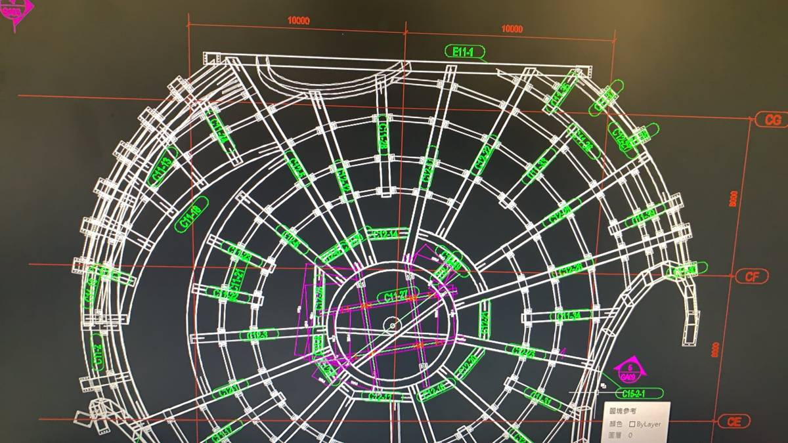
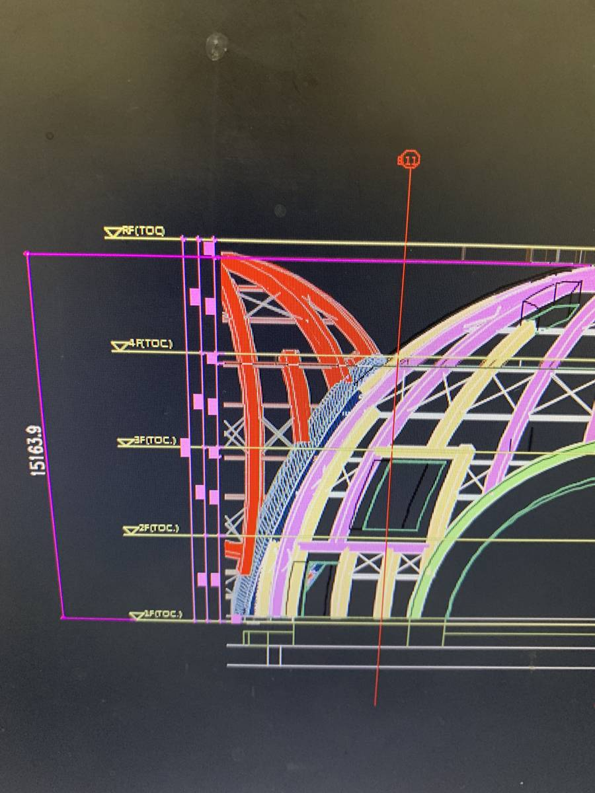
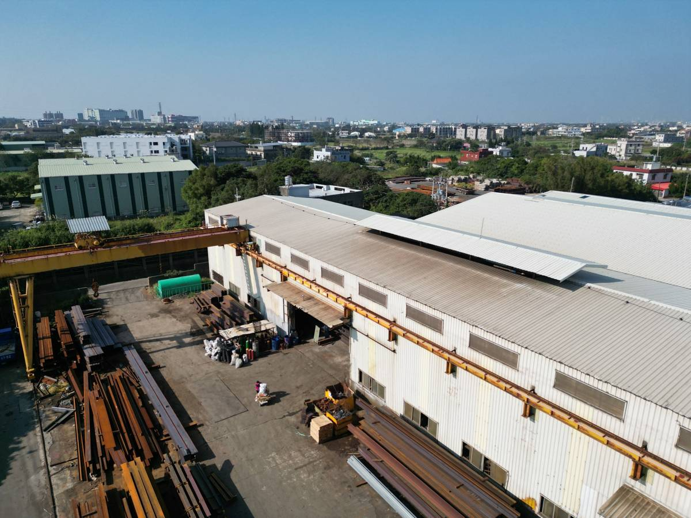
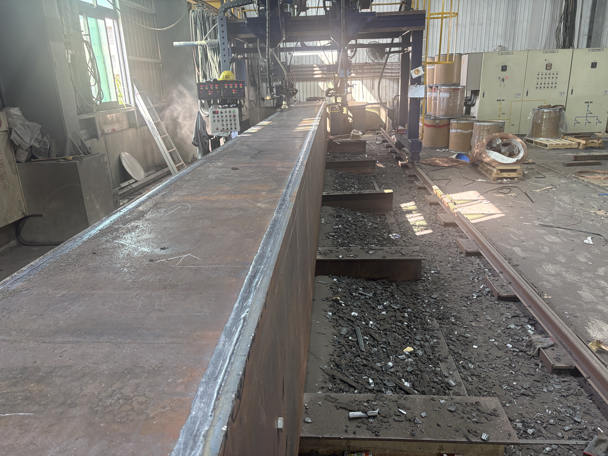

PROCESS
施工流程
從建模、圖說檢討到加工與吊裝，一條龍銜接。
- Tekla 建模建立三維鋼構模型，輔助前期估算

- 圖說檢討與 RFI檢討構件、接頭與碰撞，與設計單位釋疑確認

- 製造圖與放樣確認後出製造圖，放樣、下料

- BOX 與 H 型鋼加工雷射、CNC 與組立焊接

- 吊裝規劃吊裝分區、節次與吊車配置規劃

為什麼先做圖面檢討
鋼構的接頭、開孔與尺寸，若與結構或其他專業圖面衝突，到了加工或吊裝才發現，代價最高。
01
3D 建模估算
以 Tekla 模型在前期精準估算構件與數量。
02
提前排除衝突
憑圖說檢討能力，在圖面階段找出施工衝突。
03
RFI 書面確認
與設計單位釋疑，留下確認的書面紀錄。
BOX
BOX 加工
箱型柱組立流程
- 鋼鈑平行切割兩端開槽
- U型組立點銲固定，檢查水平、垂直與角度
- 內隔鈑銲接及UT檢驗由中間向兩邊對稱施銲
- BOX 蓋鈑外部點銲固定，續做電渣銲（ESW），銲孔底部加墊襯
- BOX埋弧銲接以自動或半自動潛弧銲施銲，依序翻轉施銲


H型鋼加工
配有雷射型鋼加工機與 CNC 加工機，加工尺寸由TEKLA模型直接導入，減少人為誤植錯誤。
- 20 kW 雷射型鋼加工機（科貝）
- H 型鋼 CNC 加工機（AMADA）
- L 型鋼 CNC 加工機
- 500 噸油壓機
吊裝
依構件重量與現場條件，規劃吊裝分區、節次與吊車配置。